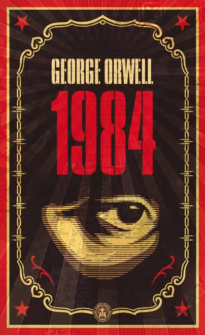

1984
George Orwell
4.4
|
Distopía / Ficción
Sinopsis
Londres es una ciudad lúgubre en la que la Policía del Pensamiento controla de forma asfixiante la vida de los ciudadanos. Winston Smith es un peón que debe reeditar la historia para adaptarla a la versión oficial del Partido.
Datos Bibliométricos
ISBN-13: 978-8499890944
Páginas: 352 páginas
Editorial: DeBolsillo
Idioma: Español
Publicación original: 1949
✓ Disponible para préstamo